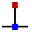

Modifying the Geometry
In Flux Bend you have a powerful sketch 2D editor to modify, clean up or add to your geometry. Use Shortcut key S to get into the sketch mode. The editor displays the part in unfold view.

In the developed view, click Sketch icon  or press Shortcut key S.
or press Shortcut key S.
A menu opens with various icons for processing the unfolding:

Sketch Panel
| Icon | Symbol | Meaning |
|---|---|---|
|
Select |
Select objects, lines, entries etc. |
|
Line |
Sketch a line |
|
Connected line |
Sketches any number of lines |
|
Parallel |
Sketches a parallel to a line |
 |
Normal |
Sketches a tangent to a curve |
|
Bending |
Sketches a normal line to a line |
|
Center-point arc |
Sketch a bending line |
|
2-point arc |
Sketches an arc from a centre point, start point and end point |
|
3-point arc |
Sketches a circular arc through two defined points (start and end point) |
|
Tangential arc |
Sketches an arc which is tangential to the sketch elements |
|
Rectangle |
Sketches a rectangle |
Centre-Point Rectangle |
Sketches a rectangle from the centre |
|
|
Circle |
Sketches a circle. Select the centre point of the circle and drag the cursor to define the radius or enter a value for the radius |
|
2-Point Circle |
Sketches a circle according to the circumference. Select a point on the circumference, then a second point and a third point. |
|
3-Point Circle |
Sketches a circle according to the circumference. Select a point on the circumference, then a second point and a third point. |
|
2-Tangent Circle |
Sketches a circle with two tangents. Enter the circle diameter, then select the first tangent and then the second tangent. |
|
3-Tangent Circle |
Sketches a circle with three tangents. Enter the circle diameter, then select the first tangent, then the second tangent and then the third tangent. |
|
Inscribed Polygon |
Sketches a circle with three tangents. Enter the circle diameter, then select the first tangent, then the second tangent and then the third tangent. |
|
Circumscribed Polygon |
Sketches a polygon. Specify the number of sides and select a centre point and the middle of a side edge |
|
Edge Polygon |
Sketches a polygon. Specify the number of sides and define the start point and end point of a side. |
|
Fillet |
Rounds the corner at the corner point of two sketch elements with an entered radius, whereby a tangential arc is created |
|
Chamfer |
Creates a bevel on the corner of the intersection of two sketch elements |
|
In-Fillet |
Trims the corner at the intersection of two sketch elements with an entered radius |
|
Corner Step |
Trims the corner at the intersection of two sketch elements with a rectangle. The size of the rectangle can be entered beforehand. |
|
Edge Recess |
Creates a rectangular free cut. You must enter corner distance, free cut depth and then select a corner. |
|
Edge U-Cut |
Creates an oblong-hole shaped free cut. You must enter corner distance, free cut width, free cut depth and then select a corner. |
|
Edge V-Cut |
Creates a triangular free cut. You must enter corner distance, free cut width, free cut depth and then select a corner. |
|
Keyslot |
Creates a keyhole in a circle with the entered values. |
|
Fillet 3-Segment |
Rounds three connected sketch elements |
|
Extend |
Select the sketch element that is to be extended |
|
Trim |
Select the sketch element that is to be trimmed |
|
Join |
Used to trim and join several separate polylines into one |
|
Offset |
Offset one or more sketch elements, sketched model edges, or model faces by a specified distance |
|
Move |
Select a sketch element with ctrl select a reference point and move the sketch element |
|
Rotate |
Select a sketch element with ctrl select a rotation centre point, then a start point and an end point to rotate the sketch element |
|
Scale |
Select a sketch element with ctrl select a base point, then a start reference point and an end reference point to scale the sketch element |
|
Mirror |
Select a sketch element with ctrl then the start of the mirror line and then the end of the mirror line to mirror the sketch element |
|
Rectangle Array |
Use linear patterns to create multiple referenced copies of one or more sketch elements that you can space at equal distances along one or two linear paths. Click on the linear pattern and enter the desired values |
|
Polar Array |
Use circular patterns to create multiple referenced copies of one or more sketch elements that you can space at equal distances around an axis. Click on circular patterns and enter the desired values |
|
Union |
Select two or more closed sketched elements to combine surfaces with each other |
Intersection |
Select two or more closed sketch elements to generate a cutting area of selected elements |
|
|
Subtraction |
Select two or more closed sketch elements to trim the surface |
|
Copy Notch |
You can make multiple copies of a notch along an edge, using this tool. First, input the spacing between the copies, and the number of copies of the notch you want to make. Then, select the notch by clicking on the two-line segments that are adjacent to the notch |
|
Delete Notch |
You can delete a notch at a corner, or along a line segment, using this tool. Click on the two-line segments that are adjacent to the notch, and the notch is removed |
|
Mirror Notch |
You can mirror a notch at a corner, or along a line segment, using this tool. Click on the two-line segments that are adjacent to the notch, and the notch is mirrored |
|
Spline |
To start a new spline, click on the start point and as you click on subsequent points, the spline will be created. If you want to close the spline, press the ALT key and then click |
|
Profile |
Type in base length, flange height, thickness, flange angle, inner radius and press enter to create a profile |
|
Text |
Used to draw text that will be marked on the part by the Laser machine. When you click this tool button, the input bar displays input boxes for the text, the size, and the rotation angle |
|
TrueType Text |
Used to take the shapes of characters in any TrueType font and convert them into polylines. Laser tooling can then be applied on these polylines, and they can be cut. The first time this button is clicked, the Font dialog comes up, allowing you to choose the font to be used for the text |
|
Common Shape |
Used to create several common shapes and insert them into the drawing. When you click on this button, the Make Shape dialog appears allowing you to choose from the palette of common shapes listed |
|
Simple Dimension |
Select the first dimensioning point, then the second dimensioning point and position the dimensioning line |
|
Baseline Dimension |
Select the first dimensioning point, then the second dimensioning point and position the dimensioning line |
|
Continue Dimension |
Select the first dimensioning point, then the second dimensioning point, position the dimensioning line and select the next dimensioning point |
|
Horizontal Ordinate Dimension |
Ordinate dimensions are a set of dimensions that are measured from the ordinate zero in the drawing. Select a reference point and position the dimensioning |
|
Vertical Ordinate Dimension |
Ordinate dimensions are a set of dimensions that are measured from the ordinate zero in the drawing. Select a reference point and position the dimensioning |
|
Angular Dimension |
Creates a dimensioning for an angle. Select the first line and then the second line on which you want to dimension the angle |
|
Radius Dimension |
Creates a dimensioning for a radius. Select the circle on which you want to dimension the radius. Dimension the diameter with ctrl |
|
Centre Point Radius Dimension |
Creates a dimensioning with continuous leader for a radius. Select the circle on which you want to dimension the radius. Dimension the diameter with ctrl |
|
Callout Dimension |
Use to add notes to the drawing in the form of callouts. To create a callout, type in the text to be displayed, click to indicate where the arrow should point, and click again to indicate where the text should be placed. |
|
Segment Dimension |
Use to add dimensioning for straight line and curved segments. Click on the segment to be dimensioned and click again to position the dimension. Or hold down and click on a segment to position the dimension automatically. |